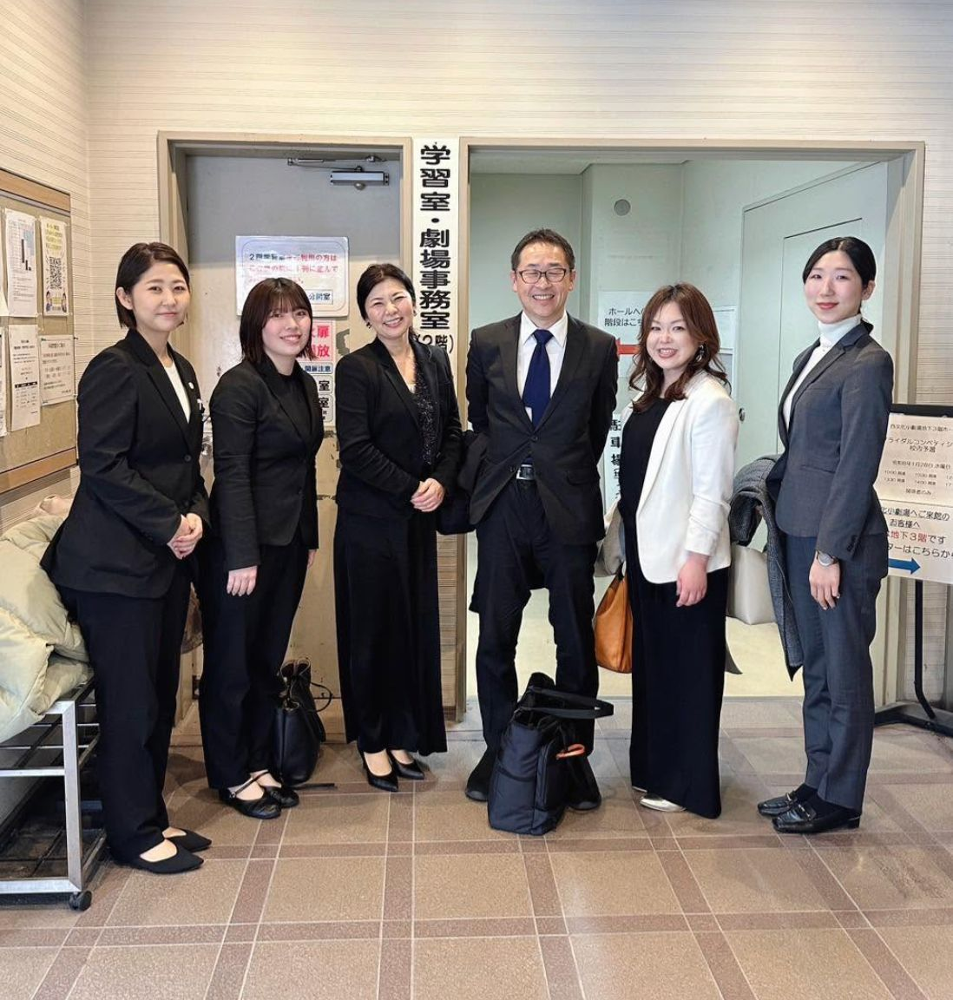

2026年1月28日、愛知ウェディング協議会に加盟していただいている名古屋ウェディング＆ブライダル専門学校のブライダルコンペティション校内予選会にお招きいただき、審査をさせていただきました。

審査員として参加した協議会メンバーと先生方。
発表に臨んだのは、学生たちによる12チーム。これからのブライダル業界への、学生らしい問題提起と、改善策や新商品のプレゼンテーションを聞かせていただきました。
現場をこれから知る立場だからこそ気づける視点、既存の常識にとらわれない発想。私たち業界の人間が「当たり前」と思い込んでいたことに、まっすぐ切り込んでくる提言もあり、審査する側こそ多くの気づきをいただきました。
緊張感あふれる発表を、審査員一同、しっかりと受け止め、質疑をさせていただきました。
大勢の前で、自分たちの考えを堂々と発表する。その姿からは、この日のために積み重ねてきた準備と、ブライダルへの真剣な想いが伝わってきました。
厳正な審査の結果、優勝チームが決定いたしました。優勝チームの皆さんには、東京で開催される本大会で、全力を尽くしてきてほしいと思います。この地区の代表として、悔いのない発表をされることを、心より応援しております。
審査員を代表して、愛知ウェディング協議会 副代表の吹原が総評を述べさせていただき、学生の皆様へエールを送らせていただきました。
未来を担う学生たちの、真剣な姿とまっすぐな提言に触れ、身の引き締まる思いです。彼らがこれから飛び込んでくるウェディング業界を、より良いものにしていく責任が、私たちにはあります。その想いを新たにした一日でした。
素敵な機会にお招きいただき、名古屋ウェディング＆ブライダル専門学校の皆様、ありがとうございました。
愛知ウェディング協議会 カレッジ部会では、学校との連携・学生の参画を通じて、業界の未来を担う人材とともに歩んでいく取り組みを進めています。